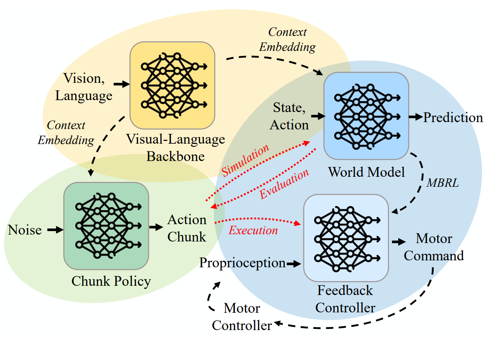
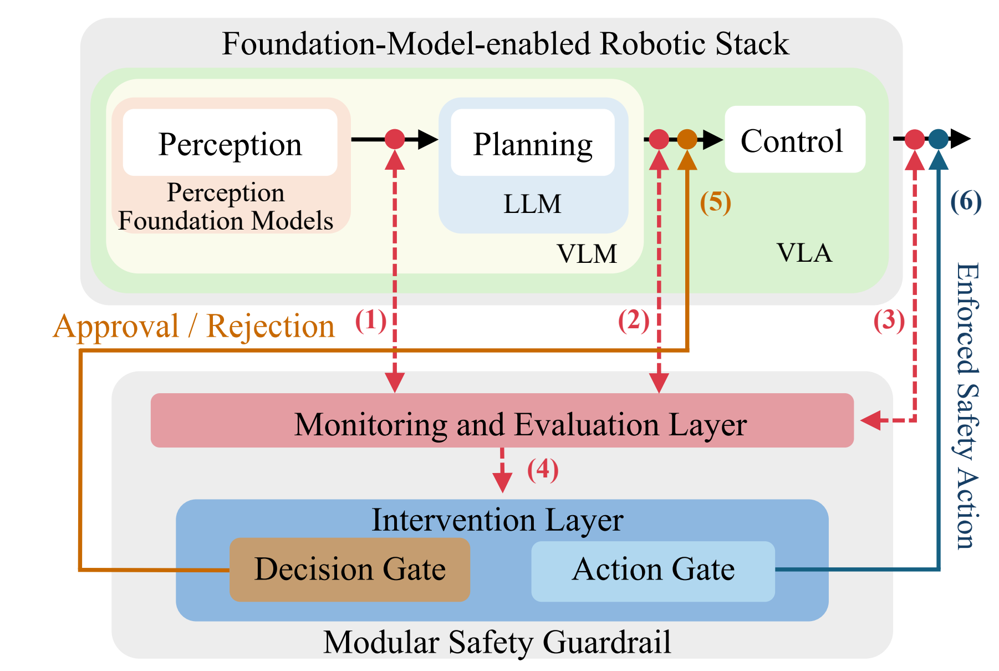
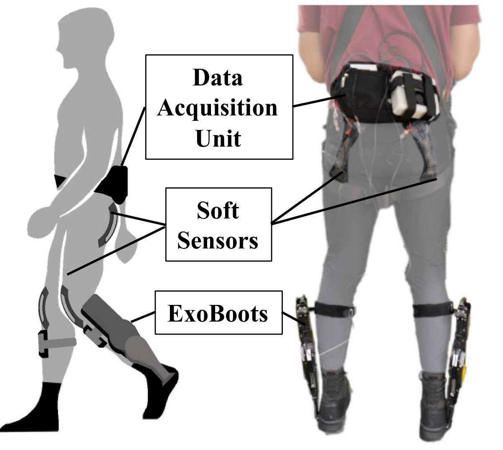
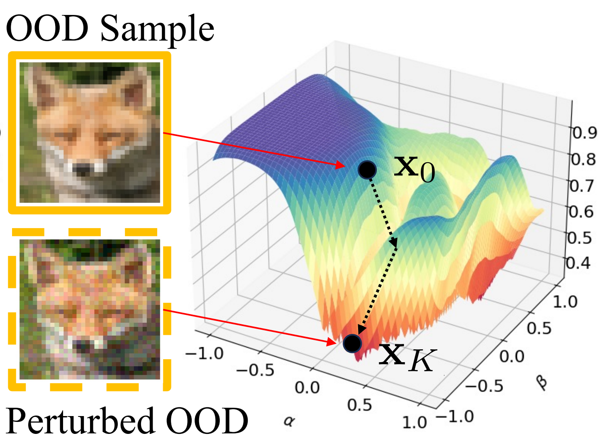

DREAM-Chunk: Test-time Scaling of Action Chunking with World Model for Stochastic Dynamics
Under Review
I am a Ph.D. student at Purdue University, where my research focuses on robot learning. I earned my M.S. in Mechanical Engineering from Columbia University in 2022, with a concentration in robotics and control. Before that, I received my bachelor’s degree in Aircraft Engineering from Huazhong University of Science and Technology.
My Chinese name is 陈文玺. My given name combines the Chinese characters for literature (Wen 文) and an imperial jade seal (Xi 玺).
My research interests center on data-driven robot learning, with the long-term goal of helping advance physical intelligence toward human-level capabilities.
I will join Foundation Robotics in San Francisco, CA, this fall as a research intern.
Our IROS 2026 workshop on AthleticHumanoid is calling for paper submissions!
I was selected to give a lightning talk at the Midwest Machine Learning Symposium, presenting our recent position paper accepted at ICML 2026.
Under Review
Under Review

Under Review
ICML 2026 Position Paper Track Accepted

IEEE ICRA 2026 Accepted
IEEE Robotics and Automation Letters, 2026 Accepted

CVPR 2025 Accepted

IEEE Robotics and Automation Letters, 2024 Accepted
IEEE/RSJ IROS 2024 Accepted